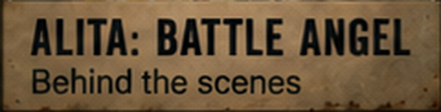
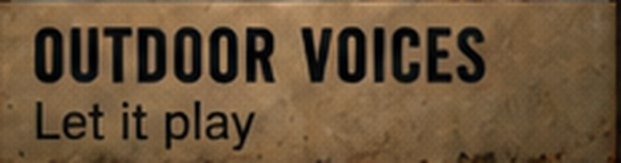
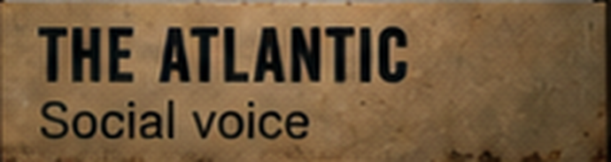

Alita: Battle AngelBehind the scenes
Review · step 7 of the launch plan
Billboard type test
Left: the lettering you approved on the More Work image (cropped, enlarged 3×). Middle and right: the same words in the two real fonts that could replace it. One of these goes on all ten boards, Work 1 and More Work. Judge the top line: width, weight, spacing. The small second line is plain Arial in all three so it doesn't distract.
Approved reference

Oswald 600
Barlow Condensed 700
Approved reference

Oswald 600
Outdoor VoicesLet it play
Barlow Condensed 700
Approved reference

Oswald 600
The AtlanticSocial voice
Barlow Condensed 700
What happens after you pick: the chosen font is used for every board's name strip, baked into the billboard photos with the same grime and light as the boards (never laid on top as clean web text). Both fonts are free for commercial use (SIL Open Font License). If neither is right, name what's off (too tall, too tight, too soft) and I'll test one more.